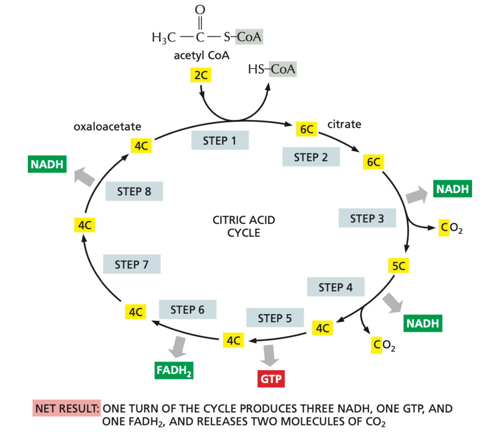

Hạch toán carbon, chất mang electron và ATP
VN05 và EN06 · Hô hấp tế bào · 4 trắc nghiệm và 1 tự luận
Bắt đầu học ↓Học trọn chương và làm bộ 80 trắc nghiệm, 15 tự luận
Sau buổi này
- Theo carbon theo khoang từ glucose qua pyruvate, acetyl-CoA và TCA.
- Tách ATP trực tiếp khỏi ATP tạo gián tiếp từ chất mang.
- Tính ATP theo một bộ giả định duy nhất.
Gợi nhớ
Một glucose cho mấy pyruvate? CO₂ đầu tiên xuất hiện ngay trong đường phân hay khi chuyển pyruvate thành acetyl-CoA?
Học kiến thức qua hình
Quan sát hình minh họa

Sơ đồ có nhãn carbon, các mũi tên tách CO₂ và dòng tạo chất mang.
Quan sát · Bắt đầu ở acetyl-CoA 2C. Đánh dấu hai mũi tên CO₂ và nơi hình ghi NADH, FADH₂, GTP.
Dự đoán · Một glucose cho hai acetyl-CoA. Nếu tính riêng hai vòng trong hình, dự đoán bao nhiêu CO₂, NADH, FADH₂ và GTP.
Mở giải thích sau khi dự đoán
Nhân kết quả một vòng với hai sẽ được 4 CO₂, 6 NADH, 2 FADH₂ và 2 GTP. Hai CO₂ giải phóng khi hai pyruvate chuyển thành acetyl-CoA nằm ở bước trước vòng.
| Giai đoạn | CO₂ | NADH | FADH₂ | ATP hoặc GTP trực tiếp |
|---|---|---|---|---|
| Đường phân | 0 | 2 | 0 | 2 ATP ròng |
| Oxy hóa pyruvate | 2 | 2 | 0 | 0 |
| Hai vòng TCA | 4 | 6 | 2 | 2 GTP hoặc ATP |
Hai GTP được tính là hai ATP tương đương nếu đề cho phép.
Đọc hình để tự rút ra cơ chế
Quan sát · Một bảng tính có 10 NADH, 2 FADH₂ và 4 ATP trực tiếp trên một glucose theo giả định.
Dự đoán · Với 2,5 ATP/NADH và 1,5 ATP/FADH₂, tổng là bao nhiêu?
Mở giải thích sau khi dự đoán
10 × 2,5 + 2 × 1,5 = 28 ATP ước tính từ phosphoryl hóa oxy hóa. Cộng 4 trực tiếp cho 32 ATP lý thuyết dưới giả định này.
Theo ba giai đoạn
Đường phân ở bào tương tạo hai pyruvate từ một glucose, thu ròng 2 ATP và 2 NADH. Oxy hóa hai pyruvate trong chất nền ty thể cho hai acetyl-CoA, hai CO₂ và hai NADH. Hai vòng TCA ở ty thể cho thêm bốn CO₂, sáu NADH, hai FADH₂ và hai GTP/ATP tương đương.
Vai trò kép của TCA
TCA vừa cung cấp chất mang electron cho hô hấp, vừa tạo chất trung gian có thể đi vào tổng hợp các phân tử. O₂ nhận electron ở cuối chuỗi hô hấp; không là cơ chất trực tiếp của đường phân hay một bước TCA.
Ước tính và điều kiện
Số ATP trên glucose phụ thuộc giá trị quy đổi NADH/FADH₂, shuttle đưa electron từ NADH bào tương vào ty thể và mức ghép của gradient. Dùng hệ số đề cho và ghi ATP mức cơ chất riêng để tránh đếm hai lần.
Liên hệ thực tế
Năng lượng quy đổi theo ATP là ước tính của một hệ có vận chuyển và thất thoát. Một con số lý thuyết giúp so mô hình khi hai bên áp cùng giả định.
Cụm bài tập
Một phép tính có khai báo giả định
Một tế bào mô hình oxy hóa hoàn toàn một glucose. Tính 2,5 ATP cho mỗi NADH vào chuỗi, 1,5 ATP cho mỗi FADH₂, và giả sử hai NADH bào tương tương đương hai NADH ty thể. Tính GTP là ATP tương đương.
Đối chiếu bài làm
Chọn một chỗ còn phân vân. Giải thích lại bằng lời của mình rồi thử một câu cùng dạng.